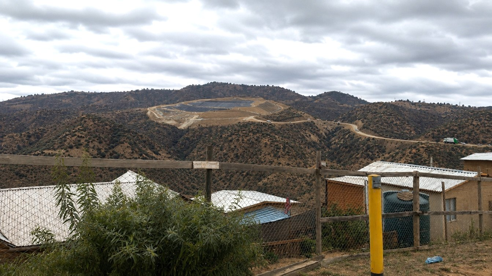

Lo esencial, en cinco cifras
El propio titular ubica 21 unidades habitacionales alrededor del predio para modelar sus olores. La más cercana queda a 676 metros del perímetro. El viento sopla desde el relleno hacia ellas casi todo el año. Y 19 de los 25 organismos del Estado que se pronunciaron sobre el estudio lo objetaron. El estudio, en cambio, reconoce un solo impacto significativo en veintitrés evaluados.
Nada de esto es opinión de los vecinos: todo sale de la cartografía y las modelaciones que el propio titular presentó al expediente.
Detalle y fuente
Las 21 unidades que lista el titular para modelar olores están entre 676 m y 2,1 km, y todas al norte: ninguna queda al otro lado del predio. Anexo 8.1 Plan de Gestión de Olor, Tabla 11 (dentro del Capítulo 8). La cartografía abierta da 820 m al suelo residencial más cercano; recalculada contra el deslinde, la tabla del titular cuadra dentro de 16 m.
Detalle y fuente
Capítulo 5, análisis del artículo 11.
Detalle y fuente
Oficios ingresados entre el 2 y el 15 de septiembre de 2026 · ver en el expediente. La lista completa, oficio por oficio, está en la sección 14.
Detalle y fuente
Ahí se proyectan 30,7 millones de toneladas de basura y 2,79 ha de cortafuegos. Medición de esta página: Sentinel-2, índice dNBR, enero vs. febrero de 2024 · método y escenas.
La ley obliga a encadenar tres cosas. Primero, el estudio debe revisar uno por uno los literales del Artículo 11 y decir en cuáles genera un efecto adverso significativo. Después debe proponer una medida para cada uno de esos efectos. Y después debe comprometer un plan de seguimiento que verifique que la medida funcionó.
Esa cadena, capítulo por capítulo. El Capítulo 5 evalúa veintitrés causales repartidas en seis artículos del Reglamento —veintidós literales, más el Artículo 8, que se analiza completo y sin literales—. Reconoce una sola.
Es coherente consigo mismo, y por eso importa: si nada es significativo, nada se mide. Durante veinticinco años y treinta millones de toneladas, la única variable ambiental con seguimiento obligatorio son tres especies de flora. No hay monitoreo comprometido de aire, de agua, de lixiviados, de biogás, de olor, de ruido, ni de la integridad de la geomembrana de 1,5 mm.
La frase que lo resume está en el propio Capítulo 5, justo después de declarar el único impacto significativo:
La pérdida de superficie física (80,39 hectáreas) sobre el ecosistema remanente, las formaciones vegetales en sí mismas, la flora no vascular, la fauna de vertebrados terrestres y la entomofauna, han sido calificados objetivamente como moderados y no significativos. Capítulo 5, conclusión del Artículo 6 letra b)
Otras cosas que el expediente ya reconoce
Estos puntos no requieren demostración de la comunidad: están en los documentos del titular.
El área de influencia se superpone con el Humedal Urbano Estero Quilpué, protegido por la Ley 21.202.
El proyecto afecta 3,85 ha del Sitio Prioritario regional Palmar Las Siete Hermanas – El Salto.
La Falla Marga-Marga pasa a 500 o 600 m al norte de las instalaciones, donde se emplaza la zona de tratamiento de lixiviados sobre geomembrana.
Para olores se usó como referencia la norma de la Región de Lombardía, Italia, porque Chile no tiene norma de olor vigente.
El área de influencia declarada cubre El Salto, Las Lomas y El Belloto — no incluye Botania, Canal Chacao, Cumbres ni Pompeya.
La inversión declarada es de USD 40 millones. La ficha pública del SEIA muestra «40.000 millones de dólares» por un error de carga del sistema.
El sitio prioritario Palmar Las Siete Hermanas – El Salto se superpone con la superficie de intervención del camino de acceso que construirá el proyecto.
El predio se emplaza dentro de la zona de transición de la Reserva de la Biosfera La Campana – Peñuelas, designación unesco.
El territorio está cubierto por el Plan de Recuperación de las Ranitas de Darwin, aprobado por Decreto 38/2026 del Ministerio del Medio Ambiente.
Por ruido, «reptiles y aves se encuentran dentro del área de afectación conductual, por lo que se considera un impacto significativo».
El proyecto está «fuera del Plan Regulador Metropolitano de Valparaíso», «quedando únicamente el camino de acceso dentro de su cobertura. Esta condición será evaluada formalmente mediante solicitud de informe a la SEREMI MINVU».
Qué pediría una observación aquíQue el titular explique por qué su Capítulo 3.8
califica como significativo el ruido sobre reptiles y aves y su Capítulo 5 declara no significativo ese
mismo literal; que informe el resultado de la consulta a la SEREMI MINVU sobre el Plan Regulador
Metropolitano antes de la calificación; y que comprometa un plan de monitoreo de aire, olor, ruido,
aguas y biogás con resultados públicos durante la operación y el post-cierre, porque hoy el
Capítulo 7 solo sigue tres especies de flora.
Cómo ingresarla →
La basura se acumularía en una quebrada hasta coronar en la cota 350. Sobre el espesor final, el propio expediente da dos cifras que no coinciden: su Tabla 40 declara 80 metros de espesor promedio, y dividir la capacidad que declara —24.331.032 m³— por la superficie que declara da 54 metros. Mueve la línea de tiempo y míralo crecer.
El terreno es real —modelo de elevación público, remuestreado a 20 m por píxel— y encima van las once capas de obras que el titular acompañó al expediente. Arrastra para girar.
Capas, simulación y viento
Elevación: Terrain Tiles (Mapzen/AWS Open Data, 8 m/px), remuestreada a 512×512 con cuantización de 11 bits (paso de 0,26 m). El modo Cartográfico es síntesis: colores y texturas derivados de la geometría del terreno, no una fotografía — sirve para leer el relieve, no como evidencia de cobertura. El modo Satélite sí es imagen real: Esri World Imagery (Esri, Maxar, Earthstar Geographics) a 2 m/px, y pesa 1,7 MB, por eso se carga solo al pedirlo. La masa crece con espesor uniforme sobre toda la huella: el expediente declara tres etapas de excavación pero no georreferencia la secuencia de llenado, así que no se simula un orden que el titular no publicó.
Qué pediría una observación aquíCuál es el espesor y la cota final de la masa de residuos —80 m según la Tabla 40 o 54 m según la capacidad dividida por la superficie que declara—, y con qué secuencia de llenado georreferenciada, porque el Capítulo 1 declara tres etapas de excavación pero no dónde ni cuándo.
Cómo ingresarla →
El Sitio Prioritario Palmar Las Siete Hermanas – El Salto se dibuja con la capa oficial del servidor cartográfico de la Superintendencia del Medio Ambiente (Estrategia Regional de Biodiversidad, escala 1:50.000): 2.234,5 ha que llegan hasta 255 m del deslinde del predio y 570 m de la zona de disposición. El deslinde no lo toca, pero las obras sí: la Zona de Instalaciones Operacionales y Administrativas que el titular cartografió se extiende 7,3 ha fuera del deslinde, y 3,79 ha de ella caen dentro del Sitio Prioritario. Medido sobre la cartografía del propio expediente, ese solape reproduce con un 1,6 % de diferencia las 3,85 ha que el Capítulo 5 declara intervenidas por el camino de acceso. El relleno no es vecino del Sitio Prioritario: entra en él.
El establecimiento sensible más cercano —el consultorio SAPU de Pompeya— está a 2,50 km del deslinde, y dentro de los primeros dos kilómetros no hay ninguno. Los colegios, jardines y centros de salud del sector aparecen en el mapa de arriba: son 188 en total, nueve de ellos a menos de 3 km. Lo que está cerca no son los equipamientos: son las casas.
Cartografía del titular reproyectada de UTM 19S (EPSG:32719) a WGS84. Suelo residencial y receptores: OpenStreetMap, consulta Overpass del 19 de octubre de 2026 en radio de 6 km.
Las distancias, medidas
Cada cifra declara cómo se obtuvo, porque el método decide si resiste una Adenda: medir de borde a borde no es lo mismo que medir al centro de un barrio.
| Sector | Al deslinde del predio | A la zona de disposición | Cómo se midió |
|---|
La referencia es el deslinde del predio, las 206 ha donde se emplaza el proyecto completo —camino de acceso, báscula, planta de lixiviados, compostaje y reciclaje—, no solo la pila de residuos: los impactos de construcción y operación empiezan en ese límite. La segunda columna da la distancia a la zona de disposición, unos 450 m más adentro. Toda cifra de distancia debería declarar cuál de las dos usa, porque en una Adenda esa ambigüedad se usa en contra.
Las filas marcadas al centro del barrio se miden contra el punto de etiqueta de OpenStreetMap —el centro nominal, no la casa más cercana—, así que la distancia real a la primera vivienda es menor. Las marcadas borde a borde son las defendibles.
Qué pediría una observación aquíQue el titular reconozca en el área de influencia la superposición con el Sitio Prioritario Palmar Las Siete Hermanas – El Salto que su propio Capítulo 5 admite en el camino de acceso, con sus medidas y seguimiento, en vez de excluirlo por no ser una categoría reconocida; y que toda distancia del expediente declare si se mide al deslinde o a la zona de disposición.
Cómo ingresarla →
El 99,7 % del predio donde se proyecta el relleno ardió en el megaincendio de febrero de 2024. No una parte: prácticamente todo. Y donde iría la zona de tratamiento de lixiviados ardió el 100 %, con severidad alta en el 74 % de esa superficie.
Esto no lo declara el expediente: resulta de comparar dos imágenes satelitales, una del 18 de enero de 2024 y otra del 12 de febrero, diez días después del incendio. Actívalo como capa en el visor 3D del comienzo.
Índice dNBR con bandas B8A y B12 de Sentinel-2 L2A, umbrales de severidad del usgs. Escena previa del 18 de enero de 2024 y posterior del 12 de febrero, diez días después del incendio, elegidas entre las de menor nubosidad del par. La flecha marca el rumbo del viento predominante que declara el Anexo 4.2 del expediente: desde el sitio hacia las casas.
| Superficie | Quemada | Severidad moderada-alta o mayor |
|---|
2,79 hectáreas de cortafuegos para 206
El proyecto declara 2,79 ha de cortafuegos, repartidas en tres parches separados de 0,50, 0,96 y 1,33 ha — no una franja continua.
El perímetro de la zona de disposición mide 5.410 metros. Si esas 2,79 ha se extendieran como una banda alrededor de ella, la franja tendría 5,2 metros de ancho. Alrededor del predio completo, 5,1 metros.
Y ese trazado de cortafuegos se quemó al 100 % en febrero de 2024.
Índice dNBR (diferencia del Normalized Burn Ratio) calculado con las bandas B8A y B12 de Sentinel-2 L2A, umbrales de severidad del usgs. «Quemada» es dNBR ≥ 100. Ambas escenas se eligieron entre las de menor nubosidad disponibles para el par de fechas.
Y esto es lo que tendrían para apagarlo
El Capítulo 1 —la descripción del proyecto, veinte megabytes— y el Capítulo 8, el Plan de Prevención de Contingencias y Emergencias, son donde el titular declara con qué medios cuenta. Conteo de menciones en ambos:
| Medio de extinción | Menciones en el Cap. 1 | Menciones en el Cap. 8 |
|---|
No hay red húmeda, ni red seca, ni hidrantes, ni sistema fijo de extinción, ni reserva de agua contra incendio. El agua potable del sitio llega en camiones aljibe que rellenan estanques periódicamente.
El plan de emergencia para un incendio en la masa de basura dice, textualmente, cubrir con tierra, usar extintores, pedir la excavadora, pedir el camión aljibe y «se pedirá apoyo a las unidades de emergencia respectivas (bomberos)».
Con el apoyo de maquinaria, se procederá a apagar los desechos incandescentes utilizando tierra o extintor. Capítulo 8, Tabla 35 · Plan de Emergencia, incendios en la masa de basura
El Capítulo 1 sí declara, aparte, «la habilitación de una faja cortafuego de 10 metros de ancho, paralela al cierre perimetral», y la Tabla 35 menciona «dispositivos de extinción de incendios de espuma» y una brigada. Lo que no aparece es cualquier red o reserva de agua.
Las cifras son conteos literales de los términos sobre el texto completo de ambos capítulos. Un conteo en cero no prueba que la obra no vaya a tener ese elemento: prueba que el expediente sometido a evaluación no lo compromete. Si existe, debería aparecer en la Adenda.
Qué pediría una observación aquíQué red húmeda, reserva de agua, brigada y plan de evacuación compromete el proyecto para un predio que ardió en un 99,7 % en febrero de 2024, y por qué bastan 2,79 ha de cortafuegos en tres parches más una faja de 10 m, cuando los Capítulos 1 y 8 no mencionan red húmeda, red seca ni hidrantes.
Cómo ingresarla →
El expediente trae un estudio que nadie ha citado: once tomografías de resistividad eléctrica, 643 electrodos con coordenadas, que radiografían el subsuelo del predio en profundidad. Son las secciones de colores de abajo, y en el bloque están paradas en su posición real.
Lo que muestran: sobre la roca compacta hay entre 15 y 40 metros de «maicillo» —granito meteorizado, suelto y permeable—. El propio informe hidrogeológico reconoce que ahí las aguas lluvia «podrían infiltrarse y almacenarse de forma temporal» y que «escurrirían aguas abajo hacia zonas más deprimidas».
fondo del vaso, cota 200 sección geofísica del titular: su escala de resistividad está en la imagen de abajo
La obra, en vertical
Entre las dos cosas
| Capa | Espesor | Permeabilidad |
|---|
Debe mantener su integridad los 25 años de operación y todo el post-cierre. El PAS 141 del propio expediente sitúa la falla Marga-Marga a 500 o 600 metros, según la página que se lea.
Las once secciones son del Anexo 1, Estudio Geofísico mediante ERT, del propio titular, y se reproducen sin retoque. Están ubicadas con las coordenadas UTM de los 643 electrodos que publica su Anexo A, y la escala vertical de cada imagen quedó calibrada ajustando su línea de topografía contra el modelo de elevación: el error medio es de 2,7 metros, lo que confirma a la vez la georreferencia y el modelo. El espesor del maicillo se dibuja como dos bandas —los primeros 15 m y la franja variable hasta los 40— porque el informe entrega un rango, no un mapa. La exageración vertical del bloque es ×1,8 y las secciones van a esa misma escala.
Qué pediría una observación aquíQué monitoreo de aguas subterráneas compromete bajo el vaso —pozos, frecuencia y parámetros— dado que el informe hidrogeológico reconoce que el agua podría infiltrarse en 15 a 40 m de maicillo permeable y el Capítulo 7 no compromete ninguno.
Cómo ingresarla →
En 2023, antes de presentar el estudio, el titular encargó un informe geológico a sus propios consultores. Esto es lo que le entregaron:
Se confirma la existencia de una falla potencialmente activa y perteneciente a la Zona de Fallas Marga Marga en el extremo norte del complejo, la cual compromete el cierre perimetral. Informe geológico-estructural preliminar, noviembre de 2023
El informe recoge de la literatura —cita a Sabaj, 2008— de qué es capaz esa estructura: un sismo de magnitud 6,8 con aceleraciones de 49,5 % de la gravedad. Y recomienda correr el cerco doscientos metros al sur, dejando un buffer de ciento cincuenta.
El expediente no documenta explícitamente haber movido el cerco, pero su línea de base geológica sitúa después la traza fuera de las instalaciones, a 500 o 600 metros según la página que se lea. Démoslo por resuelto: el D.S. 189 prohíbe emplazarse sobre una falla activa, y ya no se emplaza sobre ella. Queda la otra mitad de la pregunta, la que el informe también dejó planteada: qué le pasa al sello del relleno cuando el suelo se mueve a medio g.
Las dos palabras, en el expediente
El Capítulo 1 describe la geomembrana catorce veces. El Capítulo 4, que es el que predice y evalúa los impactos del proyecto, no la nombra nunca — ni a ella, ni al sismo, ni a la falla.
Los conteos son sobre el texto completo de cada capítulo, incluidas tablas y pies de figura. «Sísmico» cuenta también «sísmica» y «sismicidad»; «falla» se cuenta como palabra entera, para no arrastrar «fallas de equipos». El Capítulo 3.5, que es la línea de base geológica de 2026, concluye que hay «ausencia de fallas con actividad durante el Holoceno dentro de los confines del Proyecto» — compatible con haber corrido el cerco, pero describe en 2026 como ausencia lo que en 2023 su propio consultor describió como una falla potencialmente activa que comprometía el perímetro. Ese mismo capítulo sitúa la traza a 600 m en una página y a 500 m en otra; el PAS 141 dice 600.
Qué pediría una observación aquí: que el expediente incorpore una evaluación del comportamiento del sistema de impermeabilización basal —geomembrana, GCL y drenes— bajo la aceleración que el propio informe geológico del titular atribuye a la Zona de Fallas Marga-Marga, y que esa evaluación quede en el Capítulo 4 con su medida y su seguimiento.
Si algo escurre del relleno, el terreno decide hacia dónde. Ciento veinte recorridos trazados desde la zona de disposición y las piscinas de lixiviados, siguiendo la máxima pendiente celda por celda. Los 120 terminan en el mismo lugar: el Estero Marga-Marga, a 1,5 kilómetros cauce abajo.
En el camino pasan a 90 metros del Estero Quilpué y a 120 metros del Humedal Urbano que la Ley 21.202 protege — el mismo con el que el titular reconoce que su área de influencia se superpone.
Esto no es un modelo hidrogeológico. Es el recorrido que seguiría el agua superficial por gravedad, calculado con el método D8 sobre un modelo de elevación de terreno desnudo a 18 m por celda, con relleno previo de depresiones. No incorpora infiltración, obras de drenaje, alcantarillado ni el flujo subterráneo — que es justamente lo que habría que modelar, y está en los capítulos 3.3 y 3.4 del expediente.
Lo que sí establece es la dirección: cualquier escurrimiento desde el predio baja hacia el sistema Marga-Marga – Quilpué. No hacia otro lado.
Qué pediría una observación aquíQue la línea de base de calidad de agua incluya más de un día de muestreo, la estación húmeda y aguas subterráneas, y que el titular explique cómo capta y trata la escorrentía del predio antes de que llegue al Estero Marga-Marga, a 1,5 km cauce abajo, pasando a 90 m del Estero Quilpué y a 120 m del humedal protegido.
Cómo ingresarla →
El estudio de impacto vial del proyecto modela 182 viajes de camión al día y concluye que no hay impacto. Pero nunca dice cuánto carga cada camión, ni menciona que el relleno pasa de 2.466 toneladas diarias el primer año a 4.460 en el año 25, según la tabla de producción anual del propio Capítulo 1 —la que suma las 30.741.988 t que declara—. Su tasa de diseño, la que sí repite en todo el expediente, es de 2.500 t/día.
Si se hace esa división, los números no cierran: con compactadores recolectores —el vehículo que el propio estudio declara— harían falta entre dos y cinco veces más camiones de los que modeló.
Tres capítulos, tres cifras: 65, 91 y hasta 319 camiones al día
Los líquidos que escurren: dónde está el vacío real
El estudio sí controla el percolado dentro del recinto: hay losa de lavado con hidrolavadora, cámara de decantación, separador de hidrocarburos y tratamiento de lodos activados. Todo el protocolo operacional —pesaje, descarga, lavado, salida— ocurre después de que el camión llegó.
Sobre el viaje de ida, cargado, el expediente no dice nada. El estudio de impacto vial no menciona percolados, derrames ni limpieza: cero apariciones. No se exige carga sellada, ni cobertura, ni inspección al ingreso.
Y ese viaje no es rural. Según el propio estudio, los camiones vienen de Valparaíso, Viña del Mar, Concón, Quintero, Puchuncaví y Casablanca, y entran por Agua Santa, Álvarez, Viana y Camino La Pólvora — avenidas urbanas, con casas, colegios y comercio a ambos lados, antes de tomar el Troncal Sur.
A eso se suma que la losa de lavado está dimensionada para 65 camiones al día: el 20 % del tránsito que el propio tonelaje exige en el año 25. Aun los camiones que sí se lavan, se lavan al llegar, no antes de cruzar la ciudad.
El estudio declara 182 viajes/día de camiones recolectores sin indicar capacidad de carga, y modela solo los años 2027 y 2028. Para que 182 viajes basten en el año 25, cada camión tendría que cargar 23,3 toneladas si los 182 son solo ingresos, o 46,6 si son ida y vuelta — muy por encima de lo que transporta un compactador recolector, que mueve entre 10 y 14 toneladas. Esta es una inconsistencia entre dos capítulos del mismo estudio, no un cálculo externo: el tonelaje sale del Capítulo 1 y los viajes del Capítulo 3.18.
Qué pediría una observación aquíCuántos camiones ingresarán cada año y con qué carga, por qué calles urbanas, y qué medidas impiden derrames de líquidos en el viaje cargado, porque el Capítulo 3.18 modela 182 viajes solo para 2027 y 2028 sin indicar la carga, y la losa de lavado del Anexo 9.6 está dimensionada para 65 camiones al día.
Cómo ingresarla →
Las catorce poblaciones más cercanas están todas al norte o al noreste del relleno: ninguna supera el rumbo 51,4° y ninguna baja del 359°. Ninguna queda a barlovento. Botania está a 1,9° y Cumbres de Quilpué a 359°: sobre el eje mismo del viento. Y quien define ese eje es el propio titular.
Su Anexo 4.2 modela el viento del sitio con WRF y concluye que la dirección predominante está entre 180° y 200° — del sur y sur-suroeste, con media de 5,73 m/s. Un viento que proviene del sur sopla hacia el norte, que es exactamente donde está la gente. Con ese rango estricto —sopla hacia 0° a 20°— caen dentro dos poblaciones; la franja ancha del diagrama es una pluma de ±35°, que es un supuesto de este análisis y no del expediente.
Ninguna población queda a barlovento
Comunidades más cercanas
lo que declara el titular: viene de 180°–200°,
sopla hacia 0°–20° · media 5,73 m/s
pluma de ±35°: supuesto de este análisis
fuera de la pluma de ±35°
Rumbos geodésicos calculados en UTM 19S desde el centroide del predio. El «eje de la pluma» es el rumbo 10°, punto medio del rango 180°–200° que declara el Anexo 4.2, rotado 180°. Esto no reemplaza una modelación de dispersión: la concentración real depende de estabilidad atmosférica, topografía y tasa de emisión, y está en el Anexo 4.3 y 4.4 del expediente. Lo que esta tabla muestra es la geometría del problema, que es condición necesaria.
Qué pediría una observación aquíQué concentración de olor modela el Anexo 4.4 en cada una de las 21 unidades habitacionales de la Tabla 11 del Anexo 8.1, con qué norma de referencia, y qué resultado da en las poblaciones que quedan sobre el eje del viento predominante que el propio Anexo 4.2 declara.
Cómo ingresarla →
El titular dibujó un Área de Influencia del Medio Humano de 3.487 hectáreas y la acompañó al expediente como archivo cartográfico. Cruzado ese polígono con las veintiséis poblaciones más cercanas: dos quedan dentro. Veinticuatro quedan fuera.
Estar dentro del área de influencia no es un detalle técnico: define quién es parte afectada reconocida y sobre quién deben evaluarse los impactos.
El borde pasa a 72 metros de Botania
| Población | Distancia a la zona de disposición | Distancia al borde del área de influencia | ¿La reconoce el estudio? |
|---|
El capítulo explica cómo se trazó el límite: partieron de las plumas de dispersión de emisiones atmosféricas, ruido y olores, y luego lo redujeron argumentando que «ninguno de los receptores humanos evaluados supera los criterios normativos utilizados como referencia». Es decir: el área de influencia se angosta porque el propio modelo concluye que nadie resulta afectado. Si ese modelo se cuestiona, el límite queda sin sustento — y con él la exclusión de veinticuatro poblaciones.
Polígono oficial: ai_mediohumano.shp, Datum WGS84 UTM 19S, acompañado por el titular al Capítulo 3.19. Las poblaciones se evalúan por su punto de referencia; para las que tienen polígono residencial, por su borde.
Qué pediría una observación aquíQue las poblaciones que quedan a menos de 150 m del borde del área de influencia —Botania, Cumbres de Quilpué, Nuevo Horizonte, Los Fundadores 2, Pompeya Norte y Pompeya Sur— se incluyan como parte afectada, y que los impactos del medio humano se evalúen también sobre ellas, con medidas y seguimiento.
Cómo ingresarla →
El relleno opera 25 años, pero el gas sigue saliendo 35 años más después del cierre. Nadie vive al lado de un relleno durante veinticinco años: vive al lado durante sesenta.
Todo reconstruido con los parámetros del propio expediente —la tabla de producción anual del Capítulo 1, de 900.000 a 1.627.853 t/año, 30.741.988 t en total— y con LandGEM v3.02 de la US EPA, el mismo modelo de biogás que el titular declara usar.
El gas sigue 35 años después de cerrar
Una montaña de 60 metros sobre la quebrada
Estas cifras son generación, no emisión, y no son del titular: están calculadas con LandGEM v3.02 de la US EPA usando sus parámetros por defecto (k = 0,05 año⁻¹, L₀ = 170 m³/Mg), que no son sitio-específicos para un régimen mediterráneo seco. Aplicadas al tonelaje que el expediente declara, sirven para dimensionar el orden de magnitud, no para fijar una emisión.
Con la captación del 75 % que el titular declara en la Tabla 59 de su Anexo 4.1 —junto a un 25 % de fracción no capturada y un 99 % de destrucción en antorcha—, la fuga del año peak sería de — de CO₂e anuales. Conviene no confundir las dos eficiencias: el 99 % es de la antorcha, sobre el gas que llega a ella; el 25 % restante no pasa por la antorcha.
El propio Anexo 4.1 publica además su generación de metano: 104,8 millones de m³ en el año 25. La reconstrucción de esta página, con los parámetros por defecto de la US EPA, da una cifra cerca de un 46 % mayor. La diferencia está en los parámetros, y esa es justamente la pregunta.
La pregunta que vale para la Adenda no es cuánto metano se genera, sino con qué parámetros sitio-específicos se calculó, cómo se verifica en terreno la captación del 75 % comprometida, y cómo se fiscaliza durante todo el horizonte en que el gas sigue saliendo —el titular proyecta 70 años en su propio modelo, y compromete 20 años de post-cierre.
Toda la evaluación de paisaje del proyecto se apoya en un solo fotomontaje, tomado desde Pompeya Sur. Es esta imagen, y es del titular.
Mírala con el pie de foto delante: el escenario que dibujaron no es el relleno funcionando.

La imagen es del Anexo 4.5 del expediente y se reproduce tal cual, sin retoques. Es el único fotomontaje que contiene: un punto de observación, un escenario, el posterior al cierre. Las anotaciones de «lo que no muestra» son elementos del propio proyecto descritos en el Capítulo 1 y en los PAS, ubicados de forma aproximada sobre la foto: señalan qué falta, no dónde exactamente estará cada cosa.
Qué pediría una observación aquíFotomontajes de la etapa de operación —años 5, 15 y 25— desde las poblaciones con línea de vista, y no solo el escenario posterior al cierre, para que la evaluación de paisaje del Capítulo 3.15 y la calificación del Capítulo 5 se apoyen en lo que se verá durante 25 años.
Cómo ingresarla →
De las dieciséis poblaciones más cercanas, quince tienen línea de vista al macizo desde sus calles. No es una metáfora: es geometría. Una masa de 60 metros sobre una loma de 278 llega a los 338 metros de altura, y en un relieve de quebradas eso se ve desde lejos.
El titular llega a la conclusión contraria. Su Capítulo 5 declara que el proyecto «no obstruye vistas relevantes» y califica la alteración del paisaje como no significativa — apoyado en el fotomontaje de la sección anterior, que retrata el escenario posterior al cierre.
El 46 % del suelo residencial del sector tiene línea de vista directa. Enciéndelo como capa en el visor 3D del comienzo.
Cuenca visual calculada por línea de vista sobre el modelo de elevación, desde cinco puntos de la cima del macizo hasta cada celda del terreno, con altura de ojo de 1,6 m. Es una cota superior: el modelo representa el terreno desnudo, así que no descuenta árboles ni edificios que puedan interponerse. El espesor de 60 m es el promedio sobre la huella; la forma final de la corona la define el Plan de Cierre, no analizado aquí.
Qué pediría una observación aquíQue la calificación «no obstruye vistas relevantes» del Capítulo 5 se fundamente con una cuenca visual calculada sobre el modelo de elevación con la cota final de la masa, y no con un único fotomontaje de la etapa de cierre.
Cómo ingresarla →
Diecinueve servicios públicos objetaron el estudio. Solo dos lo aprobaron sin reparos. Esto no lo dicen los vecinos: lo dice el Estado, oficio por oficio, en el expediente electrónico.
El oficio 1337 de la Municipalidad de Viña del Mar figura como «Oficio pronunciamiento Municipalidad», sin la etiqueta «con observaciones» que llevan los otros diecinueve. Su contenido no fue verificado en este análisis: conviene leerlo antes de citarlo.
Qué pediría una observación aquíQue la Adenda responda una por una las observaciones de los diecinueve organismos y cite el oficio en cada respuesta; una observación ciudadana puede pedir expresamente que se acoja lo observado por un servicio, por ejemplo SERNAGEOMIN, la SEREMI de Salud o la Dirección General de Aguas.
Cómo ingresarla →
El Artículo 29 de la Ley 19.300 habilita a cualquier persona, natural o jurídica —incluidas juntas de vecinos y organizaciones— a observar, sin costo; para hacerlo por el portal electrónico hace falta ClaveÚnica. La ley obliga a la autoridad evaluadora a hacerse cargo de cada observación y pronunciarse fundadamente sobre todas ellas en la Resolución de Calificación Ambiental, y esa respuesta queda en el expediente — es lo que después permite reclamar.
- Necesitas tu ClaveÚnica, la misma del Registro Civil.
- Entra al expediente 2168892026 en el portal del sea.
- Elige «observación ciudadana» y escribe lo que te preocupa, con tus palabras.
- Si puedes, cita un dato de esta página: la distancia, el viento, el oficio de un servicio.
- Descarga el comprobante. Es tu constancia de que observaste dentro de plazo.
Cuatro observaciones listas para copiar
Cada una cita solo lo que dice el propio expediente. Cópiala, cambia lo que va entre corchetes y agrega con tus palabras por qué te afecta. El SEA debe responder cada observación en la Resolución de Calificación Ambiental, y el titular, antes, en su Adenda.
Soy vecina del sector [población]. El informe geológico-estructural de noviembre de 2023, encargado por el propio titular y acompañado en el Capítulo 3.5, dice que existe una «falla potencialmente activa» de la Zona de Fallas Marga-Marga «la cual compromete el cierre perimetral», con un sismo posible de magnitud 6,8 y una aceleración de 49,5 % de la gravedad. El Capítulo 1 describe como barrera una geomembrana HDPE de 1,5 mm, y el Capítulo 4, que evalúa los impactos, no menciona la falla, el sismo ni la geomembrana. Solicito que en la Adenda el titular evalúe cómo se comporta el sistema de impermeabilización basal bajo esa aceleración, y que esa evaluación tenga medida y plan de seguimiento en los Capítulos 6 y 7.
El Capítulo 5 evalúa 23 causales del Artículo 11 y reconoce una sola como significativa: la pérdida de tres especies de flora. Por eso el Capítulo 7 compromete seguimiento solo de esas plantas, y el Capítulo 20 no compromete monitoreo participativo. El mismo Capítulo 5 califica perder «80,39 hectáreas» de ecosistema con su fauna como «moderado y no significativo». Durante 25 años de operación y 20 de post-cierre no habrá seguimiento obligatorio de aire, olor, ruido, lixiviados ni aguas. Solicito que el titular explique ese criterio y comprometa un plan de monitoreo de aire, olor, ruido, aguas superficiales y subterráneas y biogás, con resultados públicos, durante toda la operación y el post-cierre.
El Estudio de Impacto Vial (Capítulo 3.18) modela 182 viajes de camión al día, solo para 2027 y 2028, sin decir cuánto carga cada camión. La tabla de producción anual del Capítulo 1 (p. 71) declara de 2.466 a 4.460 toneladas por día. La losa de lavado del Anexo 9.6 (PAS 141, Tabla 55) se dimensionó para 65 camiones al día. Según el mismo estudio, los camiones entran por Agua Santa, Álvarez y Viana. Solicito que el titular informe cuántos camiones ingresarán cada año y con qué carga, por qué calles urbanas, y qué medidas impiden derrames de líquidos durante el viaje cargado, que el expediente no menciona.
Vivo en [población]. El Área de Influencia del medio humano que el titular dibujó en el Capítulo 3.19 deja a mi población fuera por [metros] metros, según su propio archivo cartográfico. La Tabla 11 del Anexo 8.1, que el titular usa para modelar olores, ubica viviendas a 676 metros del proyecto, y su Anexo 4.2 declara un viento predominante del sur que sopla hacia el norte, donde vivimos. Solicito que se incluya a mi población en el área de influencia del medio humano y que los impactos de olor, ruido, polvo y tránsito se evalúen también sobre nosotros, con medidas y seguimiento.
Para ingresarla hace falta ClaveÚnica. El circuito es este: tu observación entra al expediente, el SEA la incluye en su informe consolidado al titular, el titular debe responderla en su Adenda, y la autoridad se pronuncia sobre ella en la Resolución de Calificación Ambiental. Sin observaciones, nada de eso ocurre.
El plazo cierra el 3 de noviembre de 2026, según la ficha oficial del expediente, y no se amplía. Sí puede abrirse un nuevo período de participación si la Adenda modifica sustantivamente el proyecto. Puedes revisar el expediente completo en la ficha pública del proyecto, y el recorrido completo del procedimiento —con lo que obliga cada desenlace— en una vista aparte.